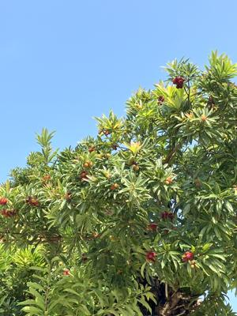
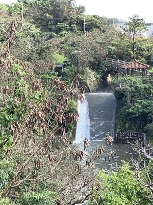

うるがいの話 ある日
最新: 退職のメール【うるがいの話 ある日】とは 一日だけのプログです
『うるがいの話』の最新一日だけのプログで、通信料が少なく経済的だ。カニの画像をクリックすると全ての日付が載る『うるがいの話』サイトを表示します
|
|
【うるがいの話】 うるがい(ｳﾙｶﾞｲ urugai)とは、『もずくがに』の名前でとても大きくなります。 |
|---|---|
|
|
【カミマヤーの話】 猫のことを方言でマヤーといいます。カミマヤー（kamimayaa）とは、神の猫のことです。 |
|
【たながぁの音楽】 たながぁ（ﾀﾅｶﾞｰ tanagaa）とは手長えびのことで、何種類かあり大きいのは車 エビぐらいになります。 |

|
【ぶながぁの話】 ぶながぁ(ﾌﾞﾅｶﾞｰ bunagaa)とは、赤い髪の毛、赤い身体、そして身長は１ｍ２０ｃｍ ぐらい、川の蟹を食べているの目撃された。場所は沖縄県国頭郡大宜味村のと ある村僕の隣近所に住んでいる爺さんから、聞いた話です。 |
|
|
【ギーマの話】 ギーマ(giima)とは、山原の里山に咲くスズランに似た、 花を付けます。実は食べられます、 気が付くと口の周りが紫になっています。 |
2024年04月16日 (火）退職のメール
20:55


うるがいさんの４月の出勤簿を送付します。
１６時過ぎに借りていたノートパソコンと
リモート端末を返却しました（ミヤさん確認済）
また、研修会館のバイク駐車場も解約手続きを
済ましております。
ＳＬＡＣＫは先ほど
アンインストールしました。
４月の出勤簿を添付します。
２週間の勤務はＹシャツさんと
同じにしています。
本日をもって、退職とさせて
頂きます。
お世話になりました。
このあと、オギさんからＳＭＳが来ていた、ン、いちゃもんか？とＬＩＮＥ
で電話する。サイン入りの一筆のＰＤＦをメールで送ってとのこと。ホー面
倒くさいが、明日行うと回答する。
２０時５１分 ビットコインの総資産 ￥２８、２２２（↓１、１７５）